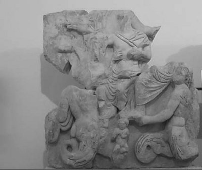
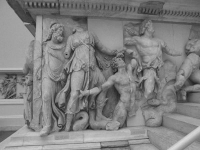

Deniz İhtiyarı Nereus denen tanrı, aslında denizler tanrısı Poseydon'un doğumundan çok önce; Gaya'yla Pontos'un, yani Toprak'la Deniz'in birleşmesinden dünyaya geldi ve bütün denizlerin egemeni oldu. Adındaki "İhtiyar" söylemi de bu öncelikten kaynaklanıyordu zaten...
Okyanus Kızı güzel Doris'le evlenen Nereus'un birbirinden alımlı tam elli kızı oldu... Gerek kızları gerekse anaları Doris; akıllı ve iyi yürekli Nereus'a büyük bir saygı ve sevgiyle bağlıydılar. Zaten yalnızca ailesi değil, onu tanıyan insanlar ve tekmil deniz yaratıkları da sevip sayardı sevimli İhtiyar Nereus'u:
Babacan Tanrı derlerdi ona,
Çünkü hem dürüsttü, yumuşak huyluydu hem;
Güzellikten yanaydı hep düşünceleri,
Hiç ayrılmazdı iyilikten, dürüstlükten.
Bu yüzden olacak, yarı insan yarı balık gövdeli Nereus Kızları'nın tümü de, iyi yüreklilikten yana babalarını hiç aratmazlardı... Hepsinin yaşamları, "ekin vermeyen deniz"in enginliklerinde, derinliklerinde geçerdi çoğunlukla... Babaları Nereus, bazen başını mavi sulardan çıkarıp gökyüzünde uçuşan kuşları, orada savrulan bulutları görme sevdasına kapıldığında; balık gövdeli güzel kızları da hiç yalnız bırakmazlardı onu. Yarı beline dek deniz yüzeyine çıkan Nereus'un çevresine doluşurlardı hemen... Sonra da bedence şekilden şekile dönüşme özellikleri olduğundan, bu kızlar, denizin üstünde yanıp sönen bir çeşit yıldızlar harmanına da dönüşürlerdi bazen ve güneşi gökyüzünde koşturan atların saçtığı ışıklarla oynaşmaya başlarlardı yanıp sönerekten... Onların bu oyunlarını gören ve içli ezgilerini duyan yunuslar ve çeşit çeşit deniz yaratıkları, hemen onların çevresine doluşur ve hep birlikte, bütün Akdeniz'i binbir ışıklı ve rengârenk bir şölen alanına dönüştürüverirlerdi...

Poseydon, Amfitrite'yi kaçırırken
Bu güzel Nereus Kızları, insanların ve tanrıların serüvenlerine de karışırlardı zaman zaman... Örneğin bir zamanlar Baştanrı çapkın Zeus, hep âdeti olduğu üzere, Nereus Kızı Tetis'in güzelliğine de vuruluverdi. Ne var ki ondan doğacak çocuğun kendisinden daha güçlü olacağını ve gelip tahtına kurulacağını öğrenince de hemen elini ayağını çekiverdi ondan!.. Ama gene de ne olur ne olmaz, belki dayanamayıp onunla içli dışlı olurum diye kendinden kuşkulandı. O yüzden de kalkıp tanrıça güzel Tetis'i bir ölümlüyle; kral Peleus'la evlendirdi!.. Hem de kendi buyruğuyla, tanrılar tarihinde ilk kez, Olimpos'ta görkemli bir düğün şöleni düzenledi bu yeni evliler için... Ayağı gümüş halhallı tanrıça Tetis'in ölümlü biriyle yaptığı bu evliliğinden, Troya kahramanı o ünlü Ahilleus dünyaya geldi...
Gene bu güzel Nereus Kızlarının en ünlülerinden biri de Amfitrite'ydi (Amphitrite). Amfitrite, diğer kız kardeşleriyle birlikte oluşturduğu ezgiler ve oyunlar alayının başıydı. Bu kızlar alayı, bembeyaz bedenleriyle ezgiler eşliğinde oyunlar oynadıkları, halaylar çektikleri bir gün, denizler ve karalar tanrısı eli yabalı Poseydon, güzel Amfitrite'yi kestirdi gözüne. Öylesine etkilendi ki güzelliğinden, hemen deli divane vuruluverdi ona!.. Kendini tutamayıp yanına gitti doğruca! Ne var ki onun niyetini sezinleyen Nereus Kızları da hep birlikte denize atlayıp kaçışmaya başladılar. Tanrı Poseydon da en yakın dostu olan yunus balıklarından birine, Amfitrite'yi hemen bulup geri getirmesini söyledi. Birden denize dalan yunus balığı, çok geçmeden Nereus'un kızı güzel Amfitrite'yi sırtına alıp geri getirdi soluk soluğa...
Denizler ve kıtalar tanrısı eli yabalı Poseydon da, bu güzeller güzeli Amfitrite'yi, Tekirburnu yakınlarındaki denizin dibinde bulunan yosun yeşili, paslanmaz sarayına alıp götürdü...
Nereus Kızları da zaten onlara yakın, su geçirmez altın bir sarayda otururlardı. Saraylarında bazen gün boyu dikiş diker, örgü örerlerdi. Dokudukları kumaşların üstüne de adaların, karaların ve yıldızların birbirleriyle oynaştığı Akdeniz'in görkemli güzelliklerinden, oralarda yaşayan mutlu insanların yaşamlarından kesitler nakışlarlardı... Açık havalarda da her sabah erkenden kalkar; daha güneşin atları gökyüzündeki günlük koşularına başlamazdan önce, Şafak tanrıçası Eos'la birlikte, Akdeniz'in bütün sularını ve göklerini maviye boyarlardı...
İhtiyar Nereus da iyi yürekli olmasına iyi yürekliydi, ama gene de denizlerin ve de onların üstlerine serpiştirdiği kıtaların ve adaların insanlarca keşfedilmesini istemezdi. Çünkü denizin ve tekmil karaların gizemleri çözülünce, oralarda saltanatlarını sürdüren tanrılar egemenliğinin biteceğini iyi bilirdi... Zaten o yüzden kendisinden çok sonraları doğup denizler tanrısı olacak eli yabalı Poseydon da, çocuklarını hep insan yiyen canavarlara dönüştürür ve onları tekmil denizlerin belli limanlarına bekçi olarak yerleştirirdi. Bu canavar bekçiler; denizlerin gizemlerini çözmek için seyre çıkan serüvencilerin gemilerini, dağlardan koparıp fırlattıkları dev kayalarla parçalar ya da saldıkları kasırgalarla, onları uçsuz bucaksız mavi sulara gömerlerdi...
Ne var ki Nereus'un güzel kızları, hiç de babalarına çekmemişlerdi! İnsanlığın yararına ve sevgiyle denizlere açılanlara, gizli saraylarının kapılarını her zaman aralarlardı... Örneğin dev Herakles; o ünlü Altın Elmalar'ın saklı tutulduğu bahçenin yolunu öğrenmek istediğinde, İhtiyar Nereus ona hiç de yardımcı olmadı. Ama onun sevecen kızları, babalarından bu bilgiyi nasıl alabileceklerinin yollarını ona bir bir anlattılar...
İşte zaman içinde denizkızları da denen bu güzel Nereus Kızları kendilerine sevgiyle yaklaşmasını bilen iyi niyetli ve barışsever bütün insanlara, denizlerin ve de karaların bütün gizemlerini, geçen zaman içinde bir bir açıkladılar...

Nereus ve Kızları Doris ile Okeanos (Berlin Pergamos Müzesi)